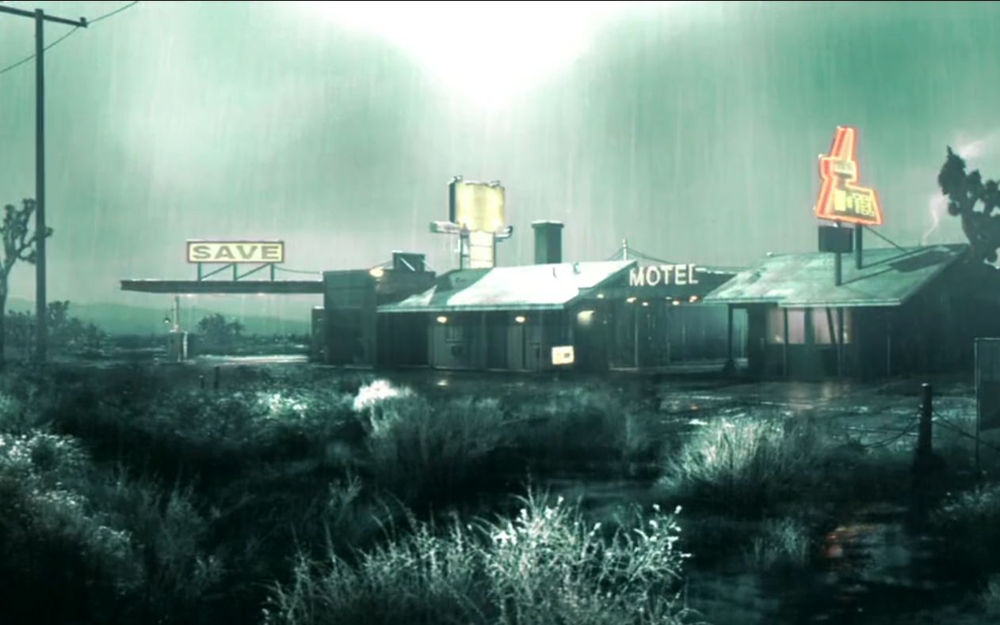
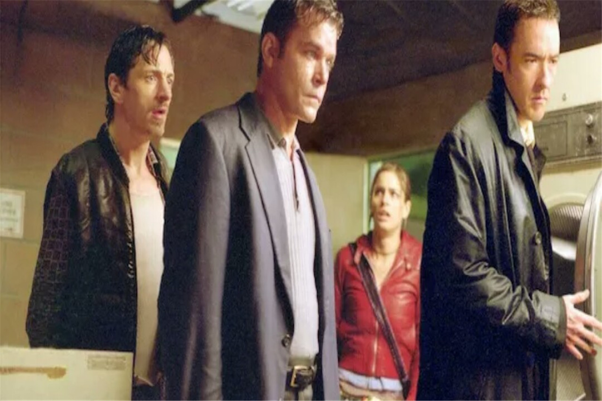
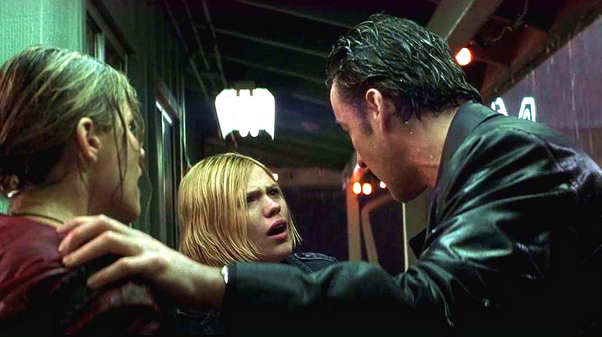
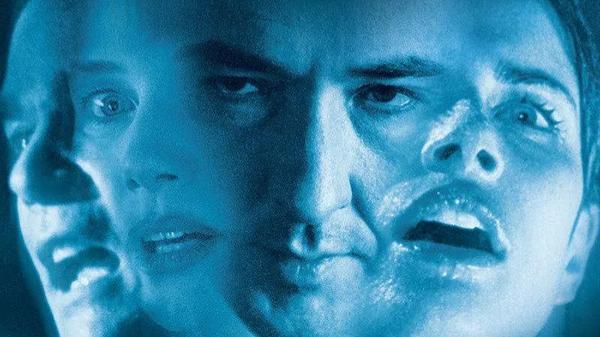

剧情简介
在一个漆黑的夜晚，一片无边无际的沙漠荒原，一场肆虐的暴风雨，将矗立在其中的一座汽车旅馆与外界完全隔离，道路不通，通讯中断。

女明星卡罗琳·苏珊的司机爱德华·达科塔在驾驶过程中， 将路边与儿子提姆西·约克玩耍的母亲爱丽丝·约克撞成重伤。 简单救治后，他和孩子的父亲乔治·约克、孩子提姆西一起将爱丽丝安置在汽车旅馆内。 随后，他在外出寻求援助的过程中，结识了妓女帕瑞斯·内华达、新婚妻子金妮、新婚丈夫路易斯安那。 由于暴雨与外界连接的道路被水阻断，一行人不得不回到了汽车旅馆。期间，司机爱德华见到了押送犯人的警察罗德斯·塞穆尔，并向其求援，但是罗德斯也无能为力。

几人在旅馆老板拉里·华盛顿的安排下，住进了汽车旅馆内。简单修整后， 爱德华走出汽车旅馆，在洗衣机滚筒内发现了卡罗琳的尸体。随后赶来的拉里和罗德斯发现了洗衣机滚筒内的房间号，此后每一位被杀死的人身旁都会出现一个门牌号， 但奇怪的是这个门牌号却不是卡罗琳的而是警察罗德斯的，这时他们突然想到被罗德斯押解的罪犯罗伯特·缅因。爱德华把众人聚在一起说明情况， 众人立马乱作一团。他让众人待在一个房间内，避免给杀人犯可乘之机。房间内的金妮和路大吵一架，金妮夺门而出，路紧随其后。金妮将自己锁进了厕所内， 出来后发现了路的尸体。罗伯特在外游荡了一会后，选择回到了汽车旅馆，正好撞见了埋伏好的众人。几人将他打晕后捆绑了起来。爱德华在分析杀人现场留下的线索时， 看到了本应看守犯人的拉里出现在了屋外。本想斥责他擅离职守的爱德华，被罗德斯告知罗伯特已经惨死。同时，拉里在争论过程中将自己随身携带的盒子打翻，里面竟是卡罗琳的财物。

争斗过程中，拉里打翻了旅馆内的冰柜，众人发现了其中的无名尸体。眼见事情败露，拉里驾车逃跑， 不小心将乔治撞死。众人趁机擒获了拉里，准备将其送往警察局。与此同时，重伤的爱丽丝不幸去世。爱德华根据去世的几人所留下的线索，发现一场诡异的事件正在发生， 便安排提姆西、金妮驾车离开汽车旅馆。车辆刚启动，便发生了爆炸，两人的尸体也神秘失踪。众人走回旅店，发现之前去世的几人的尸体也全部消失不见了。
帕瑞斯本想驾驶罗德斯的警车逃命，但却发现了他其实是个逃犯。想要将事实告诉众人的帕瑞斯， 在旅店内遇到了罗德斯。事迹败露的罗德斯开枪，打死了保护帕瑞斯的拉里，并开始追杀帕瑞斯。与此同时，爱德华在翻看众人的身份证件时， 发现了他们生日均为同一天，且姓名中均暗含美国地名。原来，旅店中的众人都是现实中杀人犯麦肯·瑞夫的分裂人格， 心理医生想要通过催眠手段，将杀人犯内心中的邪恶人格全部抹杀，只留下善良人格的代表帕瑞斯。

回到精神世界，爱德华和邪恶人格罗德斯同归于尽。帕瑞斯成了唯一的幸存者。现实世界中的法官看到了心理医生治疗的全过程，同意让麦肯免除死刑， 改为终身监禁。精神世界中的帕瑞斯在家乡橘子园内遇到了早已死去的提姆西，她发现，原来一系列死亡事件的幕后黑手竟是这个小男孩。 心理被邪恶的小男孩人格占据的麦肯，在被押运的过程中杀死了自己的医生。